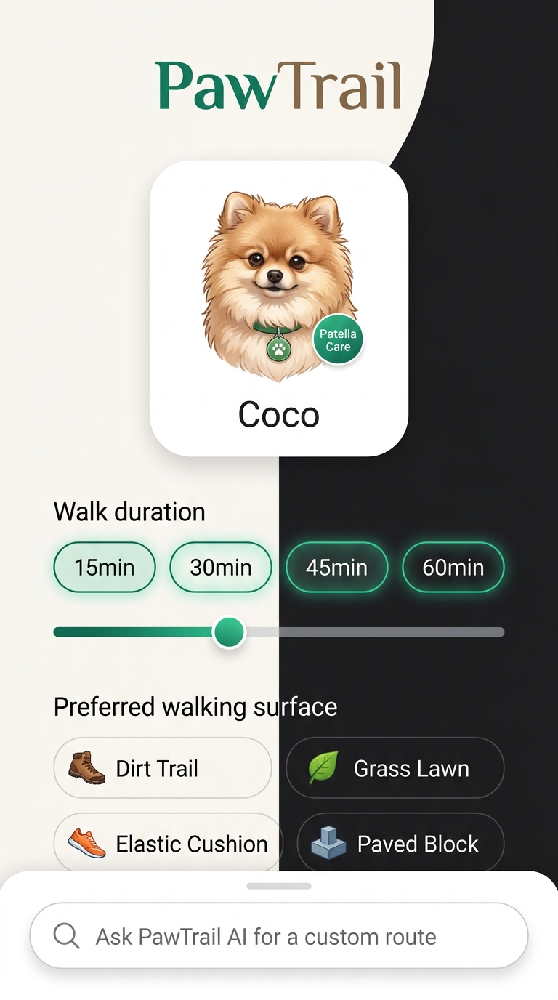

US-01 / US-02 / US-06 / US-16
1. 맞춤형 산책 플래너
견주가 반려견 프로필을 확인하고, 목표 산책 시간(15~60분)과 선호 노면을 직관적으로 선택하거나 자연어로 요청하는 첫 진입 화면입니다.
- ✔ 반려견 '코코' 프로필 (포메라니안, 슬개골 2기 케어 뱃지)
- ✔ 목표 산책 시간 프리셋 칩(15/30/45/60분) 및 5분 단위 슬라이더 (US-16)
- ✔ 선호 노면 선택 칩 (흙길, 잔디길, 탄성포장, 보도블록)
- ✔ 자연어 AI 발화 지원 ("25분 폭신한 길로 짜줘")